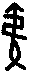
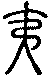
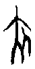
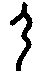
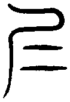

明夷卦 地火明夷
明夷，利艱貞。初九，明夷于飛，垂其翼。君子于行，三日不食。有攸往，主人有言。六二，明夷，夷于左股，用拯馬壯吉。九三，明夷于南狩，得其大首，不可疾貞。六四，入于左腹，獲明夷之心，于出門庭。六五，箕子之明夷，利貞。上六，不明晦，初登于天，後入于地。
【卦名】
今本：明夷 帛書：明夷 歸藏：明𡰥 秦簡：明夷 清華簡：亡𡰥 海昏：明夷
明夷字義為光明隕落，光明消失，引申為黑暗、災難，亂世。
歸藏作明𡰥，𡰥為夷的古文。清華簡作亡𡰥，也就是「亡夷」。
《爾雅．釋詁》：「平，均，夷，弟，易也。」〈釋言〉：「夷，悅也。」《說文》：「夷，平也。从大从弓。東方之人也。」夷有兩種主要意思，一是平易。二是東方之人。〈釋言〉說的「夷，悅也」則是平易的引申。《說文》段玉裁注對夷字說明甚詳：
各本作平也。「从大从弓，東方之人也」淺人所改耳，今正，《韵會》正如是。羊部曰：南方蠻閩从虫，北方狄从犬，東方貉从豸，西方羌从羊，西南僰人、焦僥从人，蓋在坤地頗有順理之性，惟東夷从大。大，人也。夷俗仁，仁者壽，有君子不死之國。按：天大、地大、人亦大。大象人形，而夷篆从大，則與夏不殊，夏者中國之人也。从弓者，肅愼氏貢楛矢石砮之類也。以脂切。十五部。《出車》、《節南山》、《桑柔》、《召旻》傳皆曰：「夷，平也。」此與君子如夷、有夷之行、降福孔夷，傳夷易也同意，夷即易之叚借也。易亦訓平，故叚夷為易也。《節南山》一詩中平易分釋者，各依其義所近也。《風雨》傳曰「夷，悅也」者，平之意也。《皇矣》傳曰「夷常也」者，謂夷即彝之叚借也。凡注家云「夷傷也」者，謂夷即痍之假借也。《周禮》注「夷之言尸也」者，謂夷即尸之叚借也。尸，陳也。其他訓釋皆可以類求之。
根據段注，夷字本義為平，與易同為平易的意思，引申有悅義。另亦假借為彝，解釋為常。夷也是尸的假借，尸是陳的意思。現今《周易》以夷為傷，是痍之假借。而夷之所以解釋為東方之人，夷即東夷，可能與上古夏的部族有關。夷字從大從弓，大也是人，夷的風俗仁而壽。
夷的甲骨文字源有兩種說法，一是，象一支綁了繩子的箭，字義不明，但和《說文》的從大從弓有別，似乎從大從弓是文字發展譌變而成。另一說法是、，但這個甲骨文也有學者認為是夾或仁。無論夷本字的甲骨文字源，甲金文中，尸字會假借為夷，尸字甲骨文和人字很像，而夷另一異體字𡰥即尸字的重文，古字的形構也很像仁字。《說文》：「，古文仁，或从尸。」段注：「古文夷亦如此。」
綜合以上說法，明夷兩字就原始字義來說，可通「明易」、「明常」、「明仁」，可解釋為在闡明倫常仁愛之道。但這種解釋與《周易》明夷卦義較難關聯。傳統通解以夷為傷，夷可能假借為痍，但個人竊疑，其甲骨文形構是否就有射殺、痍傷之義？《春秋公羊傳》：「敗者稱師，楚何以不稱師？王痍也。王痍者何？傷乎矢也。」痍是被箭所傷的意思，因此或許為夷、痍的本字，上有一矢，本義為箭傷，後引申為傷。
簡言之，傳統以痍傷解釋夷字，和明夷總體卦爻辭及卦義是較為貼切的。另，《老子》：「視之不見名曰夷。」河尚公注：「無色曰夷。」這或許是以平易為夷的典故，引申為平淡而無味，視之而不見。
无夷
清華簡《別卦》卦名作「亡𡰥」，改寫為今文即「无夷」或「無夷」。就字義來看，夷為易，無夷即不易，不容易。或者以夷為仁，那麼無夷就是不仁。這兩個字義都符合明夷的總體卦義。
《爾雅．釋木》：「無姑，其實夷。」無夷是一種植物，也是種中藥。
此外，無夷也是河伯的名字，在一些古書中名叫「馮夷」，又名「冰夷」，可能是馮（音憑）和冰音近之故。
《穆天子傳》卷一：「戊申，天子西征，鶩行至于陽紆之山，河伯無夷之所都居，是惟河宗氏。」郭注：「無夷，馮夷也。《山海經》云冰夷。」意思是說，穆天子在戊申日西征時，不小心路過了陽紆之山，主管黃河的河伯無夷，就住在這裡。
據傳說，馮夷是因過河時溺水而亡，天帝封為河伯。另一說，因得道而潛入大川，成為河伯。
如干寶《搜神記》：「宋時弘農馮夷，華陰潼鄉隄首人也。以八月上庚日渡河，溺死。天帝署為河伯。又《五行書》曰：河伯以庚辰日死，不可治船遠行，溺沒不返。」
《莊子》中則有兩次論及河伯。〈大宗師〉論道，「馮夷得之，以遊大川」，講的是馮夷得道之後而能夠藉以遊大川。〈秋水篇〉：「秋水時至，百川灌河，涇流之大，兩涘渚崖之間，不辯牛馬。於是焉河伯欣然自喜，以天下之美為盡在己。」成玄英疏：「河伯，河神也，姓馮，名夷，華陰潼堤鄉人，得水仙之道。河既曠大，故欣然懽喜，謂天下榮華盛美，盡在己身。」《釋文》：「河伯，姓馮名夷，一名冰夷，一名馮遲，已見大宗師篇。一云：姓呂，名公子，馮夷是公子之妻。」依《莊子》及歷代的注疏，馮夷是因為得道而變成了河伯，而河伯的個性顯然是有些高傲而自滿的，直至見到了北海才有所收斂而知所不足。
據《山海經》記載，冰夷人面，駕乘兩隻龍。
《山海經．海內北經》：「從極之淵深三百仞，維冰夷恒都焉。冰夷人面，乘兩龍。一曰忠極之淵。陽汙之山，河出其中；淩門之山，河出其中。」郭注：「冰夷，馮夷也。《淮南》云：馮夷得道以潛大川，即河伯也。」
在上古神話中，黃河的河伯和洛水的洛神之間，顯然是有些愛恨情仇。
《竹書紀年．夏紀》：「洛伯用與河伯馮夷鬥。」洛伯曾和河伯爭鬥。洛伯即居洛水之人，後來神化之後成為洛水之神。古史學家或認為，這可能是上古黃河、洛水兩大部族的戰爭。《初學記》：「歸藏曰：昔者河伯筮與洛戰而枚占，昆吾占之不吉也。」當時河伯與洛的戰爭，還曾經用過「枚占」。
但在《楚辭．天問》則又是不一樣的情節：「帝降夷羿，革孽夏民。胡射夫河伯，而妻彼雒嬪。」夷羿有兩種說法，一認為夷羿即后羿，就是接受堯命令而射下九個太陽的后羿。另一說認為后羿是后羿，夷羿是夷羿，是古東夷部族的首領故稱夷羿。無論如何，夷羿曾用箭射河伯，娶了雒嬪，雒嬪即絡水的女神。
《楚辭》傳還說，河伯被夷羿射中左眼，於是向天帝告狀，希望天帝幫他主持公道殺了羿。天帝問說：羿為什麼射你？河伯說：我當時化為一隻白龍出去玩。結果天帝說：假如你乖乖深守你自己的神靈，夷羿怎麼會冒犯到你？你沒事化為爬蟲野獸，讓人射了要怪誰？爬蟲野獸不就是要讓人射的，所以被夷羿射到剛剛好而已，夷羿有什麼罪。
細查《周易》明夷卦，有沒有可能講的就是河伯無夷的故事呢？
雖然從經文總體來看並不像是無夷的典故，但有些若有似無的脈絡證據，恐怕宜於保留此可能，不宜斷然排除。首先就卦象來說，從清華簡《筮法》研究可知，在戰國中期很可能離卦是取像為水的，明夷卦下離水，上坤地，以河伯為典故是有其道理。另泰卦九二說：「包荒，用馮河，不遐遺，朋亡，得尚于中行。」巧的是，泰九二講的很像是馮夷過河溺水而受封為河伯的事績，馮夷可能是取其馮河而夷滅之義，而泰卦該爻爻動之後洽好變成地火明夷。
【卦義】
明為光明。夷為平易，引申為消失不見。《老子》：「視之不見名曰夷。」明夷即光明消失不見。
傳統解釋為傷，《序卦傳》：「晉者進也。進必有所傷，故受之以明夷，夷者傷也。」朱熹：「夷，傷也。為卦下離上坤，日入地中，明而見傷之象，故為明夷。」《雜卦傳》：「明夷，誅也。」以夷為誅殺、剷除的意思。明夷就是光明遭到剷除、光明不見了，指的就是亂世，黑暗的時代。
《雜卦傳》：「晉，晝也。」晉為晝，則可推論明夷為夜、黑暗。王弼解明夷卦「為闇之主，在於上六」，此以明夷為闇，並以上六為明夷卦之主爻。明夷卦象為明在地中，黑暗、藏明之象。
六爻以各種不同的情境談不同涵義的「明夷」，因此明夷也當有不同的解釋。其中較特殊的是初九「明夷于飛，垂其翼」，顯然這裡的「明夷」指的是一種鳥，諸如「什麼于飛」的句型在《詩經》等古文中相當常見，都是在描繪鳥的飛行。
「明夷」到底是什麼鳥？現代學者多方考證而提出諸如「鳴鴺」（李鏡池）、「鳴雉」（高亨）一類的解釋，但實在過於迂迴而不可取。
《左傳．昭公五年》記載，叔孫豹初生時他的父親莊叔為他的一生筮了一卦，得到明夷之謙，也就是明夷卦初九爻，當時卜楚丘解釋說：「明夷，日也。日之數十」，「日之謙，當鳥，故曰明夷于飛。」從卜楚丘的回答推論可知，明夷其實就是古代的太陽鳥，也就是金烏，或稱三足烏，因此又稱日，又稱鳥。因此明夷卦與十日的傳說以及后羿射日的神話有些關係。「明夷于飛」正是形容「太陽」（其實是流星）劃過天空，從天空掉下來而消失不見。
參考文章：明夷卦與后羿射日、日中烏見的神話故事
根據知名地球科學學者趙丰的研究，后羿射日神話描繪的是古代一場彗星撞地球的天文事件。那麼明夷卦可能就是古代彗星撞地球的記載了！我們可以想像一下，上古曾有過一場彗星撞地球事件，巨大的流星火球有如「小太陽」不斷從天空掉下來，所到之處，一片焦土。古人便以「明夷」，光明消失、太陽隕落來形容這些從天空飛下來的「太陽」。同時這個事件造成了一場大災難，因此明夷就是代表世界黑暗、災難、飢荒的一卦。
甚至個人竊疑，「夷」字也可能一語多關。因為在上古神話研究發現，后羿射日之外可能也曾射殺過河伯馮夷，馮夷又名「無夷」，清華簡卦名即作「亡夷」。另一方面，東夷在上古曾是一群善於射箭的部落，但在周之後對於夷開始給予一種諸如「蠻夷」的鄙視態度，因此明夷卦是否也記載了關於周對於東夷的態度轉變？
卦象為明在地中，光明藏在地底下，黑暗的意思。離也可以象徵聰明、智慧、才能，坤為群眾。那麼明夷就是聰明、智慧、美麗都被埋沒在群眾裡，這是一個是非不分，沒有道理的世界。與明夷相反的則是晉，晉卦是太陽在地面上，日出、白天、才華出眾之象。
《彖傳》說：「明入地中，明夷。內文明而外柔順，以蒙大難，文王以之。利艱貞，晦其明也。內難而能正其志，箕子以之。」這講的是處明夷之道，應當利於艱苦守靜，端正自己的志向，將自己的聰明隱藏起來，如卦象一般明藏地中，智藏腹內，韜光養晦，以渡過這黑暗時期，待生存下去等世道改變之後再找亨通之道。
明夷，利艱貞。
《彖》曰：明入地中，明夷。內文明而外柔順，以蒙大難，文王以之。利艱貞，晦其明也。內難而能正其志，箕子以之。
《象》曰：明入地中，明夷。君子以莅眾，用晦而明。
光明隕落消失，利於艱苦與貞定。
明夷為大型流星墜落，光明火球橫空而出之後又消失於地，並造成災難。
依《易傳》及傳統注解，明夷卦講的可能是商紂無道的故事。
《彖傳》以文王及箕子的故事說明卦義。言文王內心對於事情相當清楚明白，但外在對商紂仍表現出百依百順，以此渡過大難。文王還是西伯時，被商紂囚於羑里，「閎夭之徒患之。乃求有莘氏美女，驪戎之文馬，有熊九駟，他奇怪物，因殷嬖臣費仲而獻之紂」，也就是設法奉獻珍寶美女給紂王，討他歡心，終出羑里。箕子則是裝瘋，將其聰明藏於內而不發，艱苦而堅定守正，此為韜光養晦之大智慧。
鄭玄：「夷，傷也。日出地上，其明乃光。至其入地，明則傷矣，故謂之明夷。日之明傷，猶聖人君子有明德，而遭亂世。抑在下位，則宜自艱，无幹事政，以避小人之害也。」「日出地上，其明乃光」指的是晉卦。
【字義】
君子以莅眾，用晦而明：莅，臨。虞翻：「而，如也。」「坤為眾，為晦，離為明，故用晦如明也。」君子以明夷之道來蒞臨群眾，以暗昧而為明察。孔穎達：「君子能用此明夷之道，以臨於眾，冕旒垂目，黈纊塞耳，无為清靜，民化不欺。若運其聰明，顯其智慧，民即逃其密網，奸詐愈生，豈非藏明用晦，反得其明也？」程頤：「明所以照，君子无所不照，然用明之過，則傷於察，太察則盡事而无含弘之度，故君子觀明入地中之象，於涖眾也。不極其明察而用晦，然後能容物和眾，眾親而安。是用晦乃所以為明也。若自任其明，无所不察，則己不勝其忿疾，而无寬厚含容之德，人情睽疑而不安，失涖眾之道，適所以為不明也。古之聖人設前旒屏樹者，不欲明之盡乎隱也。」
初九，明夷于飛，垂其翼。君子于行，三日不食。有攸往，主人有言。
《象》曰：君子于行，義不食也。
明夷鳥（金烏）飛過天空，翅膀下垂遮天。君子逃難出行，三天不得飲食。有長遠的路要走，主人以言語相譏。
此處的明夷為金烏鳥，明夷于飛講的是巨大的流星從天而降，古代認為這是會飛的太陽。「垂其翼」形容巨大隕石掉下來時一片焦土與黑暗，有如世界末日。這是關於上古一場天文災難的記載，因為這場災難而造成了飢荒，連君子都要逃難以致於三天都沒有飯吃。
傳統解釋以明夷為夜晚，比喻黑暗的時代，也可指鳥的翅膀受傷。明夷于飛，指鳥在夜晚飛行，喻指君子在亂世逃難，或者鳥受傷仍在飛。垂其翼，翅膀下垂，因為受傷而下垂。此比喻逃難之急迫與狼狽。
《象傳》說：「君子于行，義不食也。」此似在贊美伯夷羞於吃周朝食物的美德。但後世多數看法認為，這是因為逃難的迫切，連停下來吃東西的時間都沒有。
【字義】
明夷于飛：「…于飛」顯然是指鳥在飛，如《詩經》「鴻雁于飛」、「鳳凰于飛」、「黃鳥于飛」、「雄雉于飛」…多不勝舉，講的都是鳥在飛。同時可能因為不同的鳥飛，而有不同的隱喻。例如「鳳凰于飛」可能指太平盛世。但最多見的，經常是在隱喻人之將遠行。「明夷于飛」顯然是指「明夷」鳥在飛，也是後文「君子于行」、「有攸往」的鋪陳。同時「明夷于飛」也喻指亂世，就如「鳳凰于飛」指的是太平盛世或者是夫妻好合。至於明夷是什麼鳥？古人思想醇樸，凡是天上飛的都認為是鳥，光明消失在眼前的鳥，就是大型的流星。《左傳》昭公五年卜楚丘解釋明夷之謙說：「明夷，日也。日之數十」，「日之謙，當鳥，故曰明夷于飛。明而未融，故曰垂其翼。象日之動，故曰君子于行。」依卜楚丘，明夷于飛指的是太陽鳥（金烏）起飛。垂其翼則是剛要起飛但尚未展翅的樣子，就如太陽尚未上升到地平線上，陽光未綻放光茫，但天已微明。君子于行則是象徵太陽鳥已飛出而開始一天之運行。這是以古代十個太陽的金烏傳說在解釋明夷。李零也以金烏鳥的飛行來解釋明夷，但認為，明夷卦講的是日落過程，對比於晉卦講的是日出。傳統解釋以明夷為黑暗的時代，于飛為以鳥飛來比喻君子逃去。王弼：「初處卦之始，最遠於難也。遠難過甚，明夷遠遯，絕跡匿形，不由軌路，故曰明夷于飛。」孔穎達：「明夷是至闇之卦。上六既居上極，為明夷之主。云飛者，借飛鳥為喻，如鳥飛翔也。初九處於卦始，去上六最遠，是最遠於難。」以飛來形容君子逃離的，還有遯卦上九「肥遯」，古代或作「飛遯」，詳情可參考遯卦。
垂其翼：當依帛本為「垂其左翼」較佳。以全文來看，「明夷于飛，垂其左翼。君子于行，三日不食」像是一首完整的詩，今本《易經》顯然是缺了一左字。而明夷爻辭也多有稱左者，如六二「夷于左股」，六四「入于左腹」。《莊子》形容大鵬之飛行「其翼若垂天之雲」。垂其左翼有幾種可能的解釋，一是形容流星落地，因明夷鳥羽翼受傷而下垂，墜落地面。一是形容明夷鳥垂翼遮天而一片黑暗。《左傳》昭公五年，卜楚丘以「明而未融」描述垂其翼，明而未融是天矇矇亮但太陽光茫未出的樣子，意指太陽鳥（金烏）尚未正式展翅起飛，而是垂翼待飛之勢。傳統解釋以明夷于飛是以鳥飛比喻君子逃難，垂其翼則有兩解。一是指君子離去相當低調，如鳥之垂翼而不敢聲張。王弼：「懷懼而行，行不敢顯，故曰垂其翼也。」二是以垂翼為鳥受傷。程頤：「翼見傷，故垂朵。」朱熹：「 飛而垂翼，見傷之象。」
有攸往：有遠行。攸，作「遠」或「所」。有攸往，有遠往或有所往。
主人有言：主人，路途中接待的人為主人，如到一家客棧或是到某戶人家住宿，接待的人就是主人。有言，有話說，冷言冷語的意思。卜楚丘：「離，火也。艮，山也。離為火，火焚山，山敗。於人為言，敗言為讒，故曰『有攸往，主人有言』，言必讒也。」此以艮為言，初爻變，下卦離變艮，為離火焚山之象，於人即敗言。「有言」的言並不是好話，而是饞言，所以說「言必饞也」。
【卦例】
《左傳》昭公五年，叔孫豹剛出生時他的父親叔孫得臣（莊叔）為他筮了一卦，得到明夷之謙。卜楚丘解釋說：
是將行，而歸為子祀。以讒人入，其名曰牛，卒以餒死。
明夷，日也。日之數十，故有十時，亦當十位。自王已下，其二為公，其三為卿。日上其中，食日為二，旦日為三。明夷之謙，明而未融，其當旦乎，故曰為子祀。日之謙，當鳥，故曰「明夷于飛」。明而未融，故曰「垂其翼」。象日之動，故曰「君子于行」。當三在旦，故曰「三日不食」。離，火也；艮，山也。離為火，火焚山，山敗。於人為言，敗言為讒，故曰「有攸往，主人有言」，言必讒也。純離為牛，世亂讒勝，勝將適離，故曰「其名曰牛」。謙不足，飛不翔，垂不峻，翼不廣，故曰「其為子後乎」。吾子，亞卿也，抑少不終。」
六二，明夷，夷于左股，用拯馬壯吉。
《象》曰：六二之吉，順以則也。
光明消失，傷到了左大腿，能有強壯的馬來拯救則吉。
在流星隕石掉落的這場災難裡，傷到了左大腿而難以逃亡，這時當努力拯救，若有強壯的馬將得以逃離而吉。這裡的「吉」，是指在動亂中逃難生存下來，所以是大難不死的吉，並不是飛黃騰達、萬事如意的吉。或者可以說是不幸中的大幸，真實處境是大凶，只是能夠化險為夷而已。
根據王弼註解，夷于左股是示弱，假裝無法逃離，如此才能夠不受猜疑，再暗中以馬很快地逃離：「夷于左股，示行不能壯也。以柔居中，用夷其明，進不殊類，退不近難，不見疑憚，順以則也，故可用拯馬而壯吉也。不垂其翼，然後乃免也。」
孔穎達：夷于左股，明避難不壯，不為闇主所疑，猶得處位，不至懷懼而行，然後徐徐用馬，以自拯濟而獲其壯吉也，故曰「用拯馬壯吉」也。
朱熹：傷而未切，救之速則免矣，故其象占如此。
【字義】
夷于左股：傷及左大腿，傷腿則難行。夷，通痍，傷也。股，大腿。夷或作「眱」，通睇，斜視、瞥見的意思。股或作「般」，迴旋、盤旋。「眱于左股」，瞥見左大腿。「夷于左般」，瞥見流星從左旋中消失。《釋文》：「夷于子夏作睇，鄭陸同，亦作眱。左股，音古，馬王肅作般，姚作右般。」「馬融王肅云：般，旋也，日隨天左旋也。」《說文》：「睇，目小視也。」段玉裁注：「《周易》『夷於左股』，夷，子夏作睇。鄭、陸同。云旁視曰睇。京作眱。按：眱亦睇字也。《夏小正》：來降燕乃睇，睇者，眄也。《内則》：不敢睇視。鄭曰：睇，傾視也。」鄭玄：「此謂六二有明徳，欲承九三，故云睇于左股。」姚信：「右般，自辰右旋入北。」
用拯馬壯：拯，拯救。此言逃難中大腿受傷而無法逃跑，若有強壯的馬來拯救則能快速逃難，因此而吉。拯《子夏易傳》作抍，《說文》亦引作抍：「上舉也，从手升聲。《易》曰：抍馬壯吉。」「撜，抍或从登。」帛書作「用撜馬牀」。徐鉉：「今俗別作拯，非是。」由於壯亦通傷，因此有學者認為，「用拯馬壯」為拯救馬傷而得吉。夷于左股指的是傷到了馬的股。此看法可供參考。
順以則也：柔順而能有法則。六二柔順而中正。程頤：「六二之得吉者，以其順處而有法則也。則，謂中正之道。」
九三，明夷于南狩，得其大首，不可疾貞。
《象》曰：南狩之志，乃得大也。
光明隕落於往南狩獵的時候，去除了罪魁禍首，不可以急速的方式推行正道。
出征可以有很大的斬獲，遂其所願，但注意凡事不可操之過急。
傳統通解認為南狩是為討伐明夷之主，也就是暗昧無明的君王。王弼：「去闇主也。」
從初九可推斷出明夷講的是十個太陽與后羿射日的故事，那麼南狩講的可能就是傳說中帝堯派遣后羿去射日。離日在南，故曰南狩。
《周易》 升卦「南征吉」。離為南，所以稱南。南又有「前進」的意思，因古君王「南面」，南方在前面。南為光明，南面為向明之義。則南狩，為追求光明。
朱熹：正與上六闇主為應，故有向明除害，得其首惡之象。然不可以亟也，故有不可疾貞之戒。成湯赴於夏臺，文王興於羑里，正合此爻之義，而小事亦有然者。
胡炳文：二之救難，可速也。三之除害，不可速也，故有不可疾貞之戒。
【字義】
明夷于南狩：光明消失於往南狩獵。帛書作「明夷夷于南守」，若依帛書此句應改為「明夷，夷于南狩」，與六二「明夷，夷于左股」句型相似。狩，兩種解釋，原意為歲末的畋獵，這裡則可引申為討伐、征討。程頤：「南狩，謂前進而除害也，當克獲其大首。」《九家易》：「歲終田獵，名曰狩也。南者，九五大陽之位，故稱南也，暗昧道終，三可升上，而獵於五，得據大陽首位，故曰明夷于南狩，得其大首。」
得其大首：殺了罪魁禍首。其，指明夷（亂世）的元凶。大首，兩種解釋，一是首領。二是指元凶的首級，人頭。
不可疾貞：不可急定、不可急正，不可以為推行正道而過於急迫。疾，急迫。甲骨文疾字從矢從大，表達的是急速、快速的意思。亦通現在疾病的疾。貞，正。
六四，入于左腹，獲明夷之心，于出門庭。
《象》曰：入于左腹，獲心意也。
傳統解釋以為，這是以不正的手段接近昏君，成為他的心腹，然後在門外耀武揚威。此言小人以偏邪的方法接近昏君，助紂為虐，為虎作倀。
另一說認為這是微子啟的故事，微子是商紂左右心腹之臣，因看透紂王之心，知道紂王暴民無道，最後必將亡天下，是不值得輔佐的君王，因此毅然遠去。
朱熹直言此爻爻義難懂，無法確認，因此也只是猜想其義，其看法較偏向後者，也就是微子啟之例。
此或可將明夷解釋為明夷鳥，也就是金烏，那麼可能與后羿射日的神話有關。此言射中了明夷的左腹，明夷鳥掉落之後挖取牠的心，並拿出到門庭展示。
根據帛書易傳《謬和》，入於左腹為暗中查訪他國，入於其內。獲明夷之心為看透黑暗中的真相。于出門庭為征伐而克勝。
坤為腹，震為左，坎為心。四為門庭之外。
孔穎達：凡右為用事也。從其左不從其右，是卑順不逆也。腹者，懷情之地。六四體柔處坤，與上六相近，是能執卑順入于左腹，獲明夷之心意也。
程頤：四由隱僻之道深入於君，故云入于左腹。入腹，謂其交深也。其交之深，故得其心。凡奸邪之見信於其君，皆由奪其心也。不奪其心，能无悟乎？于出門庭，既信之於心，而後行之於外也。邪臣之事暗君，必先蠱其心而後能行於外。
胡炳文曰：初二三在暗外，至四則將入暗中。然比之六五，則四尚淺也，猶可得意於遠去。獲明夷之心者，微子之自靖。于出門庭者，微子之行遯也。
【字義】
入于左腹：依帛書《周易》，應作「明夷，夷于左腹」，與六二，九三句型同。古以右為正，左為偏邪，從左而成明夷之主的心腹，即以偏邪的方式討得君王之心。
于出門庭：干寶：「一為室，二為戶，三為庭，四為門，故曰于出門庭矣。」
【楚莊王伐陳】
帛書易傳《謬和》引用楚莊王伐陳的故事解說明夷這段爻辭：
荊莊王欲伐陳，使沈尹樹往觀之。沈尹樹反至令曰：「其城廓脩，其倉實，其士好學，其婦人組疾。」君［子□□曰］：「如是則陳不可伐也。城廓脩，則其守固也。倉廩實，則人食足也。其士好學，必死上也。其婦人組［疾則］財足也。如是則陳不可伐也。」沈尹樹曰：「彼若若君之言，則可也。彼與君之言之異。城廓脩，［則］□□人力渴矣。倉廩實，［則取］之人也；其士好學，則又外志也；其婦人組疾，則士祿不足食也。故曰：陳可伐也。」遂舉兵伐陳，克之。易卦其義曰：「入於左腹，穫明夷之心，于出門廷。」
《呂氏春秋》卷二十五也記載了這件事，但詮釋與《謬和》不一樣：
事多似倒而順，多似順而倒。有知順之為倒、倒之為順者，則可與言化矣。至長反短，至短反長，天之道也。
荊莊王欲伐陳，使人視之。使者曰：「陳不可伐也。」莊王曰：「何故？」對曰：「城郭高，溝洫深，蓄積多也。」寧國曰：「陳可伐也。夫陳，小國也，而蓄積多，賦斂重也，則民怨上矣；城郭高，溝洫深，則民力罷矣。興兵伐之，陳可取也。」莊王聽之，遂取陳焉。
楚莊王打算討伐陳國，派遣沈尹樹前往觀察敵情。回來之後跟楚莊王報告說：「他們的城牆修得很高，糧倉儲存得很充實。他們的士人都很好學，婦人都忙著織布。」莊王說：「這麼看來陳國不能討伐了。城牆高代表他們的防衛很堅固，糧倉充實代表人民豐衣足食，士人好學代表上下一心都肯為君王而死，婦人織布代表國家財力厚實。」沈尹樹說：「如果真如大王說的這樣那也就罷了，但陳國可能和大王說的情況不一樣。城牆修得很高，代表人民過勞而枯竭。糧倉滿滿的，這全都是取自百姓的。讀書人好學，是大家已心不在楚國想出外發展。婦人忙著織布，是因為士大夫的食祿實在不夠花用，婦女只好努力兼差。所以說：陳國可以討伐。」於是莊公舉兵，果然打敗陳國。
《呂氏春秋》解讀這個故事說，事情的道理經常是似倒而順，似順而倒。看起來是順的卻是倒的，看起來是倒的事實上卻是順的。有智慧的人，就是能看到似順者實際上是倒的，似倒的實際上是順的。就是能夠突破表面的假相，而直接看到實情真相。
依《謬和》來解讀，沈尹樹親自前往陳國考察，是所謂的「入於左腹」，一眼能夠突破表相看穿陳國國情真相即「獲明夷之心」，明夷代表外表的黑暗而難知，心即真相、實情。出於門庭，則是出兵討伐。
六五，箕子之明夷，利貞。
《象》曰：箕子之貞，明不可息也。
箕子處亂世而能隱藏其聰明，韜光養晦，利於貞定。
此以箕子的故事講處亂世之道。箕子為商紂的叔父，雖知商紂無道，但不忍棄之而去，於是亂髮裝瘋，以躲避禍害。此比喻人處亂世，應當要韜光養晦，隱藏自己的聰明，堅定意志，心存正直之心，靜待世局的轉變。武王伐紂之後，向箕子請益，而作《洪範》。
此處明夷的明當指聰明，明夷意指箕子能夠隱藏自己的聰明。
馬融：箕子，紂之諸父，明於天道、《洪範》之九疇，德可以王，故以當五。知紂之惡，无可奈何。同姓恩深，不忍棄去，被髮佯狂，以明為暗。故曰箕子之明夷。卒以全身，為武王師，名傳無窮，故曰利貞矣。
孔穎達：六五最比闇君，似箕子之近殷紂，故曰箕子之明夷也。
程頤：箕子，商之舊臣，而同姓之親，可謂切近於紂矣，若不自晦其明，被禍可必也，故佯狂為奴，以免於害。雖晦藏其明而內守，其正所謂內難而能正其志，所以謂之仁與明也。若箕子，可謂貞矣。以五陰柔，故為之戒，云利貞，謂宜如箕子之貞固也。
【字義】
箕子：蜀才箕子作其。劉向：「今易箕子為荄滋。」鄒湛：「荀爽訓箕為荄，詁子為滋，漫衍無經，不可究詰。」
明不可息：有兩種解釋。一，息為長，明不可息即明不可長，當明夷之世，聰明不可長，必須隱晦其明，如箕子佯狂裝瘋。二，息為熄，不可熄滅。箕子雖藏其聰明與智慧，但此明並不會熄滅，即《大象傳》「用晦而明」的意思。
上六，不明晦，初登于天，後入于地。
《象》曰：初登于天，照四國也；後入于地，失則也。
從大放光明而變黑暗！明夷鳥先是飛上了天空，接著又墜落於地。
此在描繪流星從天空出現到墜落的過程。古人將天空飛的都視為飛鳥，流星在天空時為一團火球光體，有如太陽般光明。初登於天為火球出現於空中，後入於地為隕石墜落。《史記．周本紀》記載，盟津之會時武王渡河之後：「有火自上復于下，至于王屋，流為烏，其色赤，其聲魄云。」
傳統以為這是比喻紂王為虐，身處最尊貴的地位，原本應德澤光耀而明照四國。然而行為無道，不只失去天下，還帶來殺身之禍。初登於天，言紂之登基。後入於地，言紂之被殺。
孔穎達：其意在於光照四國，其後由乎不明，遂入於地，謂見誅滅也。
【字義】
不明晦：即「丕明而晦」，從大明而變晦暗。古文「不」通「丕」，大也，如《尚書》有「丕顯」一辭，《詩經》及鐘鼎文常見「不顯」。傳統以「不明晦」為形容非常黑暗。明夷卦的離明在下方，上六距這道光是最遙遠的，所以也是六爻中最黑暗的。
【彖傳注】
明入地中，明夷。內文明而外柔順，以蒙大難，文王以之。利艱貞，晦其明也。內難而能正其志，箕子以之。
明入地中，明夷：以上下二體解釋卦義。明夷下卦為離，上卦為坤。離為光明，坤為地，是明入地中，光明隕落之象。
內文明而外柔順，以蒙大難，文王以之：以卦德解釋卦義，並以文王做比喻。內卦為離，有文明之德。外卦為坤，柔順之義。以文明之德而蒙大難（困於羑里），柔順處之，這是文王之明夷。
以有二義，一，用也。文王用之，文王用此明夷之道以應對困於羑里之難。二，似也。文王似之。荀爽：「明在地下，為坤所蔽，大難之象。大難，文王君臣相事，故言大難也。」《釋文》引 鄭玄：「蒙，猶遭也。一云蒙冒也。」「以之」，鄭荀向作「似之」。虞翻：「以，用也。三喻文王。大難謂坤。坤為弑父，迷亂荒淫，若紂殺比干。三幽坎中，象文王之拘羑里。震為諸侯，喻從文王者，紂懼出之，故以蒙大難，得身全矣。」「文王以之」王肅作「惟文王能用之」。
利艱貞，晦其明也：以上下二體卦象解釋經文「利艱貞」。坤為腹，離為明。明者聰明也。明夷乃明藏腹中，韜光養晦，晦其明之象。
內難而能正其志，箕子以之：「內難而能正其志」未知卦象基礎來自何處，或以互體坎為難為志，九三當位，故曰正。虞翻以陰陽相反之旁通義來解釋，明夷陰陽相反為訟卦。虞翻：「箕子，紂諸父。故稱內難。五乾天位，今化為坤，箕子之象。坤為晦，箕子正之。出五成坎，體離，重明麗正。坎為志，故正其志，箕子以之，而紂奴之矣。」按：虞翻所講之旁通，指的是卦象之陰陽相反，即來知德所說的「錯」象。
《彖傳》並未指出明夷卦主爻，依王弼《卦略》：「為闇之主，在於上六。」孔穎達：「上六居明夷之極，是至闇之主。」這是以明夷為「黑暗」，並以上六為最黑暗的一爻而言，並用以喻指商紂。後世儒者大抵皆採此說，特別是宋明之後的易學。
其他漢易學家則以卦變來解釋，明夷從臨而來，臨卦九二上行至三而成，那麼當以六二和九三為成卦之主爻。虞翻曰：「夷，傷也。臨二之三而反晉也。」蜀才：「此本臨卦也。」
若以《彖傳》理論來推理則有兩種可能， 一是如前所言，臨卦卦變而來。二是就旁通的陰陽交換來說，小畜卦上九至復三，小畜成需，復變成明夷。小畜為密雲不雨，君子有攸往而先迷不得復之卦，變成需則仍有待而行。復為陽爻生於初，君子復其位之卦，若小畜九二之復五成屯則雲行雨施，利於建侯。但小畜上之復三成明夷則雲行雨不施，為君王無道。以旁通而論，九三為唯一的成卦主爻，九三似乎符合《彖傳》「內難而能正其志」的描述。
與明夷卦成卦相同的卦依理而推有需卦、訟卦，及晉卦。就訟卦「剛來而得中」以九二為主，而晉卦「柔進而上行」以六五為成卦主爻來推斷，似乎當以臨卦卦變而來。
关于段注“夷”字的本义，略作更正：
《出車》、《節南山》、《桑柔》、《召旻》傳皆曰：「夷，平也。」此與君子如夷、有夷之行、降福孔夷，傳夷易也同意，夷即易之叚借也。易亦訓平，故叚夷為易也。《節南山》一詩中平易分釋者，各依其義所近也。《風雨》傳曰「夷，悅也」者，平之意也。
——— 段注之意，夷作“平”义是假借“易”而来。夷的本义是“东方之人也”，而不是“平”。
关于训夷为“雉”
注家有训夷为“雉”者，其实并不很“迂曲”，分说如下：
1）夷古音即读如“雉”，二字亦有假借，段注有之：“按雉古音同夷。周禮雉氏。掌殺艸。故書作夷氏。大鄭从夷。後鄭从雉、而讀如鬀。今本周禮作薙者俗製也。左傳。五雉爲五工正。夷民者也。楊雄賦辛雉卽辛夷。”
2）《韩诗外传》“雉，耿介之鸟也。”，《礼记·曲礼》：“ 凡挚，天子鬯，诸侯圭，卿羔，大夫雁，士雉”，注曰“凡挚士雉谓其守介节。交有时，别有伦也。” ——— 雉为耿介之鸟，处明夷昧暗之时，而不失其节、不丧其守，“君子于行，义不食”者也。
3）“明夷”训为明雉、鸣雉，盖有依据如上（雉羽色华丽故谓之明）。说卦“离，明也”、又“离，雉也”。——— 而训“明夷”为坠星陨石云云，则未免无据。
案：训“夷”为不可见、消失之义，我觉得意尚存疑。《老子》称
案：训“夷”为不可见、消失之义，我觉得意尚存疑。《老子》称“视而不见曰夷”，所本为何、训诂依据是什么，恐怕还需要另行讨论。（可能是通假别的字，而能否进一步训为“消失”则更存疑）
感謝您的指正
感謝您的指教。
明夷解釋為隕石墜落是經過很細密而多方位的典故考證而得，依據的並不是單一的字義訓詁，也不是一個查字典直接翻譯的工作。所以你把它當做單純的訓詁來看，當然有很多不解。
像《左傳》卜楚丘之言，還有《史紀》武王遇流烏之典故，還有當代科學家對於天文現象的解釋，您好像也沒能好好閱讀與思索，而只把問題的思考點限縮在您所認定的某些片面字義訓詁上。
再就訓詁來說，《老子》所言不可為本，不可為據，然後要求另有所本，那麼您所舉的《韓詩外傳》、《左傳》《禮記》註.......是不是更應該要另有所本？所以以您評論老子文獻價值的一句話，來看您所舉的那些文獻，是不是也都該「另有所本」再來說。只不過，要「另有所本」到什麼地步才算數呢？恐怕您也得先說清楚我們才能夠在這個字義該如何解釋的問題上達成共識。雖然您所舉的夷字的字義基本上我覺得沒什麼問題，沒什麼好反對的。
至於《說文》所說夷為東方之人，您認定這是夷的本義，只是我們同樣也不知《說文》所本為何，而且現在甲骨與金文研究證明《說文》很多字義說法也不對了，所以恐怕也還是要用您這個同樣的標準來看《說文》。
所以，若用您給《老子》所下的標準來看這事，我真的不知道這《周易》的基本字義問題該如何收場就是了。
Jack兄關於周易的考據方法，個人還是比較贊同的
Jack兄關於周易的考據方法，個人還是比較贊同的，如果要知道周易的古義當然先要瞭解文字的本源在哪裡。當然因為年代久遠，jack兄對於一些傳統訓詁難以解釋的地方作出大膽推測，很多還是很有見地令人啟發的，即使有些地方本人亦會有不同的意見，但在沒有重大考古進展條件下也是見仁見智了。看得出來，鑿兄很有古文造詣，但個人愚見如果只拘泥於前人的考據，只怕對周易的研究也只能亦步亦趨無法更進一步吧。